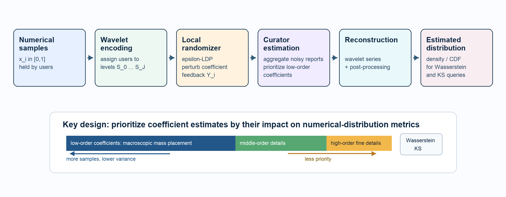

Consistent Estimation of Numerical Distributions under Local Differential Privacy by Wavelet Expansion
IEEE S&P 2026

Abstract
Distribution estimation under local differential privacy (LDP) is a fundamental and challenging task. Significant progresses have been made on categorical data. However, due to different evaluation metrics, these methods do not work well when transferred to numerical data. In particular, we need to prevent the probability mass from being misplaced far away. In this paper, we propose a new approach that express the sample distribution using wavelet expansions. The coefficients of wavelet series are estimated under LDP. Our method prioritizes the estimation of low-order coefficients, in order to ensure accurate estimation at macroscopic level. Therefore, the probability mass is prevented from being misplaced too far away from its ground truth. We establish theoretical guarantees for our methods. Experiments show that our wavelet expansion method significantly outperforms existing solutions under Wasserstein and KS distances.
Resources
Citation
@inproceedings{ZZSSZWL26,
author = {Puning Zhao and Zhikun Zhang and Bo Sun and Li Shen and Liang Zhang and Shaowei Wang and Zhe Liu},
title = {{Consistent Estimation of Numerical Distributions under Local Differential Privacy by Wavelet Expansion}},
booktitle = {{S&P}},
publisher = {IEEE},
year = {2026},
}